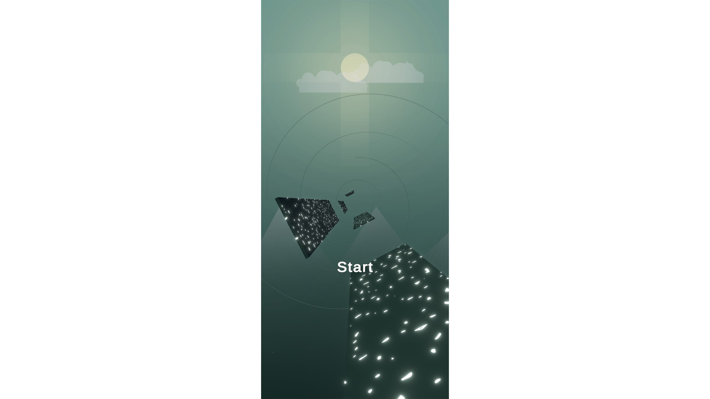
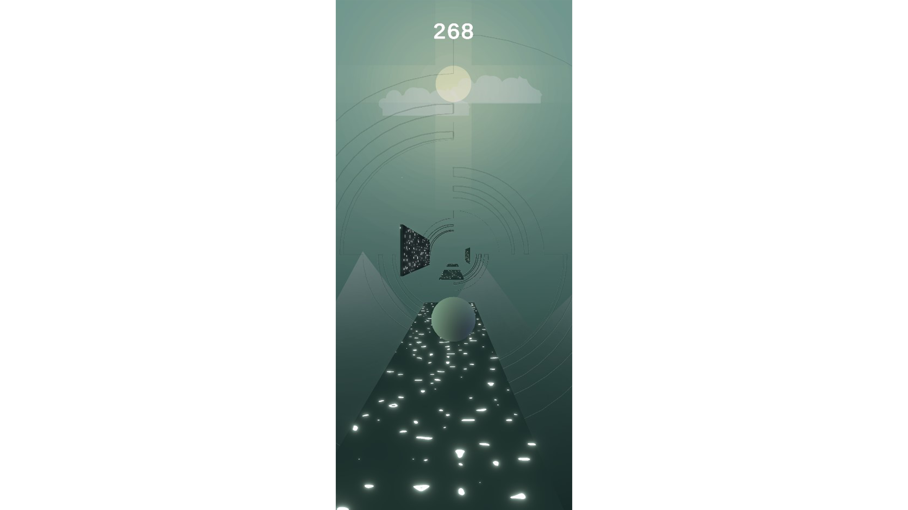
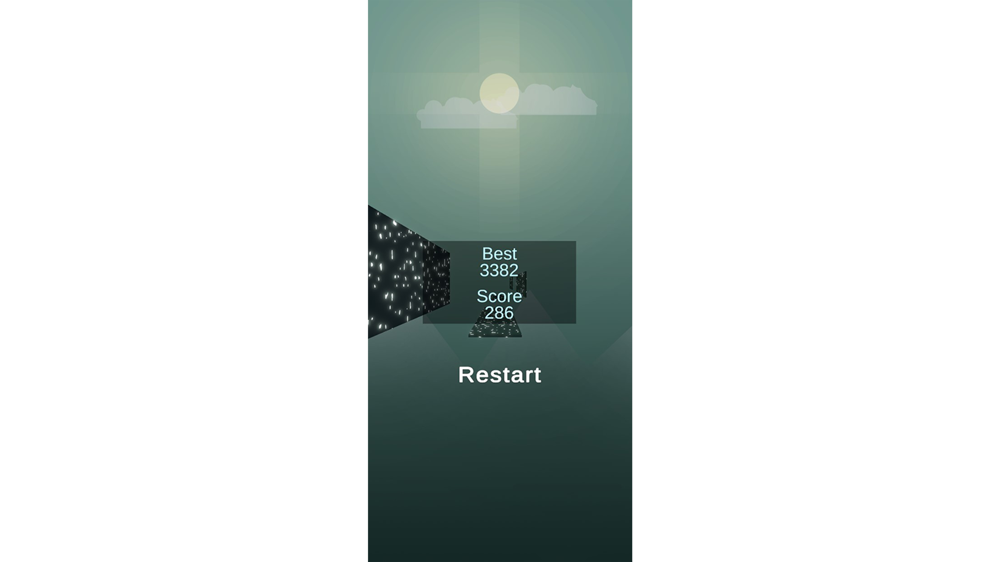

In this project I wanted to create a small addictive-kind of mobile game. I used photoshop to create the background and URP for the graphics. Also I've created a shadergraph for the platforms.
A video preview of the game
When you open the app a sample of the game is there as the background. Once you press start the game loads.
All you have to do is decide to which side to jump to. The speed of the player is getting faster as you progress.
At the end you can see your final score and your all time best score.
